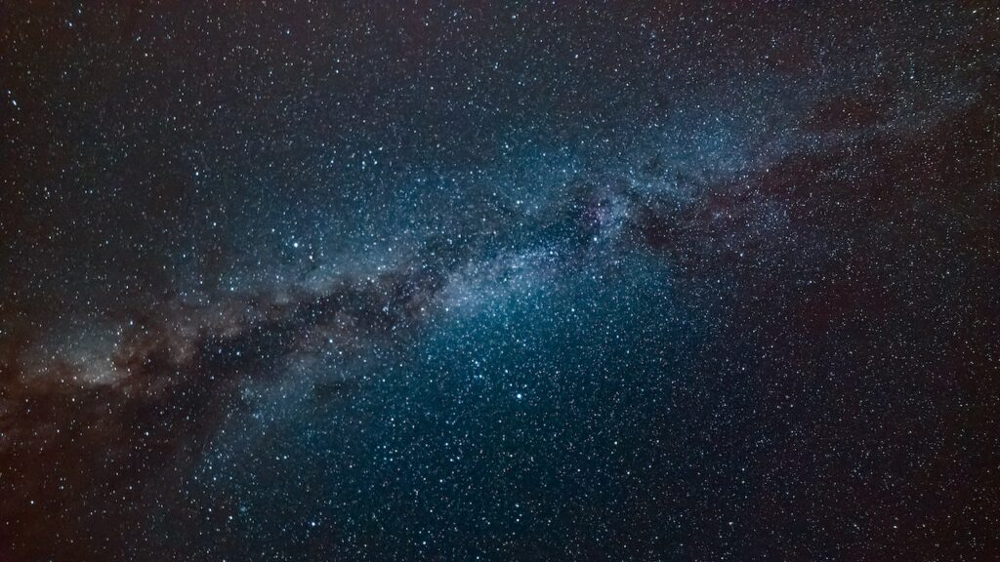
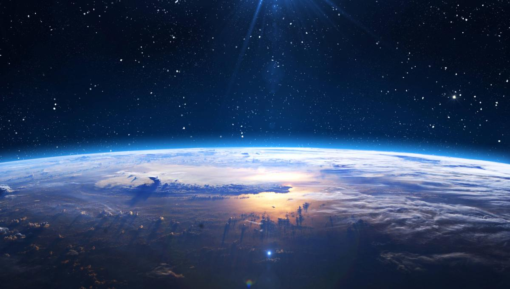
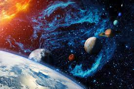

HISTORIAL ESPACIAL
1/ LA HISTORIA ESPACIAL
El espacio exterior, espacio vacío, espacio sidéreo, espacio sideral o simplemente espacio, se refiere a las
regiones relativamente vacías del universo fuera de las atmósferas de los cuerpos celestes. Se usa «espacio exterior» para distinguirlo
del espacio aéreo y las zonas terrestres. El espacio exterior no está completamente vacío de materia (es decir, no es un vacío perfecto)
sino que contiene una baja densidad de partículas, predominantemente gas hidrógeno, así como radiación electromagnética. Aunque se supone
que el espacio exterior ocupa prácticamente todo el volumen del universo y durante mucho tiempo se consideró prácticamente vacío, o repleto
de una sustancia denominada «éter», ahora se sabe que contiene la mayor parte de la materia del universo. Esta materia está formada por radiación
electromagnética, partículas cósmicas, neutrinos (cuya masa es tan pequeña que viajan a velocidades cercanas a la de la luz), materia oscura
(materia que compone casi el 90% de las galaxias pero que no interactúa con la luz y nunca ha sido observada)1 y la energía oscura. De hecho
en el universo cada uno de estos componentes contribuye al total de la materia, según estimaciones, en las siguientes proporciones aproximadas:
4,53 % de elementos pesados, 0,5 % de materia estelar, 0,3 % de neutrinos, aproximadamente 25 % de estrellas y aproximadamente 70 % de energía oscura,
lo que da un total de 100,33 %, por lo que sobra un 0,33 % sin estimar. La naturaleza física de estas últimas es aún apenas conocida. Solo se conocen
algunas de sus propiedades por los efectos gravitatorios que imprimen en el período de revolución de las galaxias, por un lado, y en la expansión acelerada
del Universo o inflación cósmica, por el otro.
 |
2/ PRIMERAS OBSERVACIONES
Los antiguos filósofos griegos debatieron la existencia del vacío, o de la nada. La teoría atomista, (en la que destacaban Leucipo y Demócrito)
sostuvo la idea de una infinidad de átomos moviéndose en un vacío infinito. Por su parte, Platón era escéptico sobre la existencia del vacío. En su diálogo Timeo (58d),
menciona que «existe un tipo más translúcido [que el aire] al que se le llama éter (αίθηρ)». Aristóteles, que había sido alumno de Platón, estuvo de acuerdo en este punto con su mentor.
En su libro Sobre el cielo introdujo un nuevo elemento en el sistema de los 4 elementos clásicos. Este elemento estaba localizado en las regiones celestiales y en los cuerpos celestes
y no tenía ninguna de las cualidades que tenían los elementos clásicos terrestres. No era ni caliente ni frío, ni húmedo ni seco.2 Con esta adición el sistema de elementos se extendió
a cinco y más tarde los comentaristas comenzaron a referirse a él como la quinta esencia.
3/ FORMACION
De acuerdo con la teoría del Big Bang, hace aproximadamente 13.8 mil millones de años el universo recién creado era de un estado de extremo calor y densidad,
en muy poco tiempo se expandió rápidamente. Pasados 380 mil años el universo se volvió lo suficientemente frío para permitir a los protones y electrones combinarse, fase conocida como
época de recombinación. La materia y la energía se separaron, permitiendo a los fotones viajar libremente por el universo en expansión. La materia que quedó después de la expansión inicial
sufrió un colapso gravitacional para crear estrellas, galaxias y objetos astronómicos, dejando un vacío conocido como espacio exterior.
 |
4/ ENTORNO
En el espacio exterior las estrellas, planetas y otros cuerpos celestes no se someten a ninguna fricción, por lo que pueden moverse libremente en sus órbitas. Sin embargo,
el supuesto vacío del espacio no lo es del todo, contiene algunos átomos de hidrógeno por metro cúbico.16 La baja densidad de materia en el espacio sideral significa que la radiación electromagnética
puede viajar grandes distancias sin dispersarse: la trayectoria libre media de un fotón en el espacio es de aproximadamente 10^23 km, o 10 billones de años luz.
5/ REGIONES DEL ESPACIO
Las diferentes regiones del espacio están definidas por las diversas atmósferas que dominan dentro de ellos, y se extienden sin un límite definido. El espacio geoespacial se extiende
desde la atmósfera de la Tierra hasta los confines del campo magnético, con lo cual da paso al viento solar del espacio interplanetario. El espacio interplanetario se extiende hasta la heliopausa, con
lo cual el viento solar da paso a los vientos del medio interestelar.35 El espacio interestelar continúa hasta los bordes de la galaxia, donde se desvanece en el vacío intergaláctico.
 |